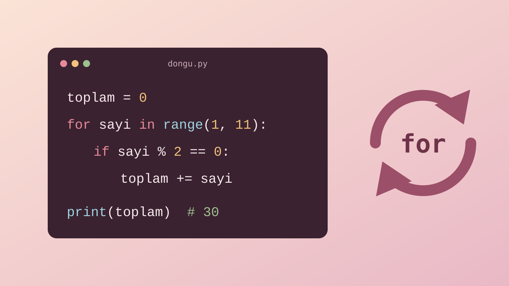

Python ile Algoritma ve Döngü Mantığı

Programlamaya başladığımda en çok zorlandığım şey sözdizimi değil, düşünme biçimiydi. Bilgisayara “bunu yap” demek yetmiyor; ne yapacağını, hangi sırayla ve ne zaman duracağını tek tek söylemek gerekiyor. İşte bu sıralı talimatlar dizisine algoritma diyoruz.
Algoritma nedir?
Algoritma, bir problemi çözmek için izlenen sonlu ve açık adımlar dizisidir. Çay demlemek bile bir algoritmadır: suyu kaynat, demliği ısıt, çayı ekle, bekle. Kod yazmadan önce adımları düz Türkçe ile yazmak (buna sözde kod denir) hatalarımı ciddi ölçüde azalttı.
for döngüsü: sayısı belli tekrarlar
Bir işlemi kaç kez tekrar edeceğimizi biliyorsak for kullanırız. range(1, 11) ifadesi 1’den 10’a kadar sayılar üretir; 11 dahil değildir. Aşağıdaki örnek 1 ile 10 arasındaki çift sayıları toplar:
# 1'den 10'a kadar çift sayıların toplamı
toplam = 0
for sayi in range(1, 11):
if sayi % 2 == 0:
toplam += sayi
print("Toplam:", toplam) # Toplam: 30while döngüsü: koşul sürdükçe
Kaç tekrar olacağını bilmediğimiz durumlarda while kullanırız: koşul doğru olduğu sürece döngü devam eder. Koşulu hiç yanlış yapmayan bir döngü sonsuza kadar çalışır, bu yüzden deneme sayısı gibi bir sınır koymak iyi bir alışkanlık.
dogru_sifre = "akdeniz07"
deneme = 0
while deneme < 3:
sifre = input("Şifre: ")
deneme += 1
if sifre == dogru_sifre:
print("Giriş başarılı!")
break
else:
print("3 hatalı deneme. Hesap kilitlendi.")break ve continue
break döngüyü hemen bitirir, continue ise o turun geri kalanını atlayıp bir sonraki tura geçer. Örneğin bir listede ilk negatif sayıyı bulduğumuzda break, boş değerleri atlamak istediğimizde continue işimizi görür.
Benim için en faydalı alıştırma, her döngüyü yazmadan önce kâğıda “kaç kez dönecek, ne zaman duracak?” sorularının cevabını yazmak oldu. Döngüyü bu iki soru ile düşündüğünüzde hataların çoğu daha klavyeye dokunmadan çözülüyor.